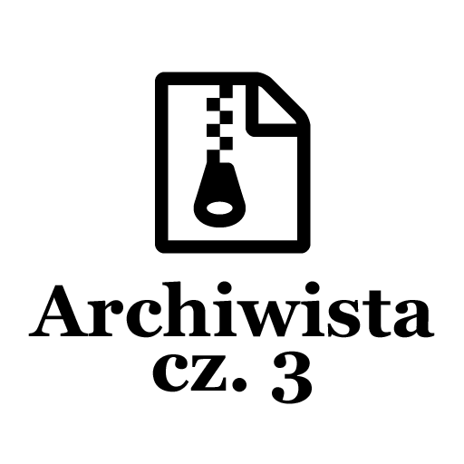

Post archive
Archiwista [cz. 3 – Styl GUI]

Posiadam już większość rzeczy potrzebnych do stworzenia interfejsu graficznego. Jak do tej pory zdecydowałem się na dwie czcionki - Lato i Font Awesome, paletę kolorów w odcieniu niebieskiego, język angielski dla całej aplikacji oraz wstępny wygląd. Czas połączyć te wszystkie rzeczy i zabrać się za implementację aplikacji. Aplikację napiszę wykorzystując technologię WPF oraz język C#. Moim środowiskiem programistycznym będzie Visual Studio Community 2017.
Słowniki
Pierwszą rzeczą, którą warto zrobić zaczynając jest stworzenie słowników zawierających nasze stałe informacje takie jak czcionki oraz ich rozmiary, kody ikon Font Awesome i kolory z palety. Windows Presentation Foundation pozwala nam na tworzenie Resource Dictionary, z których skorzystam. Zostanie utworzony nowy plik Fonts.xaml zawierający wszelkie informacje na temat czcionek.
<ResourceDictionary xmlns="http://schemas.microsoft.com/winfx/2006/xaml/presentation"
xmlns:x="http://schemas.microsoft.com/winfx/2006/xaml"
xmlns:local="clr-namespace:Archivist"
xmlns:system="clr-namespace:System;assembly=mscorlib">
<FontFamily x:Key="LatoThin">pack://appliction;,,,/Fonts/#Lato Thin</FontFamily>
<FontFamily x:Key="LatoRegular">pack://appliction;,,,/Fonts/#Lato Regular</FontFamily>
<FontFamily x:Key="LatoBold">pack://appliction;,,,/Fonts/#Lato Bold</FontFamily>
<FontFamily x:Key="LatoLight">pack://appliction;,,,/Fonts/#Lato Light</FontFamily>
<FontFamily x:Key="FontAwesome">pack://appliction;,,,/Fonts/#FontAwesome</FontFamily>
<!-- ... -->
<system:Double x:Key="FontSizeXXSmall">5</system:Double>
<system:Double x:Key="FontSizeXSmall">8</system:Double>
<system:Double x:Key="FontSizeSmall">10</system:Double>
<system:Double x:Key="FontSizeRegular">14</system:Double>
<system:Double x:Key="FontSizeBigger">16</system:Double>
<system:Double x:Key="FontSizeLarge">20</system:Double>
<system:Double x:Key="FontSizeXLarge">26</system:Double>
<system:Double x:Key="FontSizeXXLarge">32</system:Double>
<system:String x:Key="FontAwesomeSettingsIcon"></system:String>
<system:String x:Key="FontAwesomeFileIcon"></system:String>
<system:String x:Key="FontAwesomeFolderIcon"></system:String>
<system:String x:Key="FontAwesomeInfoIcon"></system:String>
<system:String x:Key="FontAwesomeWarrningIcon"></system:String>
</ResourceDictionary><ResourceDictionary xmlns="http://schemas.microsoft.com/winfx/2006/xaml/presentation"
xmlns:x="http://schemas.microsoft.com/winfx/2006/xaml"
xmlns:local="clr-namespace:Archivist">
<Color x:Key="DarkerPrimaryColor">#064887</Color>
<SolidColorBrush x:Key="DarkerPrimaryColorBrush" Color="{StaticResource DarkerPrimaryColor}"/>
<Color x:Key="DarkPrimaryColor">#1976d2</Color>
<SolidColorBrush x:Key="DarkPrimaryColorBrush" Color="{StaticResource DarkPrimaryColor}"/>
<Color x:Key="ActiveDarkPrimaryColor">#2196f3</Color>
<SolidColorBrush x:Key="ActiveDarkPrimaryColorBrush" Color="{StaticResource ActiveDarkPrimaryColor}"/>
<Color x:Key="PrimaryColor">#2196f3</Color>
<SolidColorBrush x:Key="PrimaryColorBrush" Color="{StaticResource PrimaryColor}"/>
<Color x:Key="LightPrimaryColor">#bbdefb</Color>
<SolidColorBrush x:Key="LightPrimaryColorBrush" Color="{StaticResource LightPrimaryColor}"/>
<Color x:Key="TextIconsColor">#ffffff</Color>
<SolidColorBrush x:Key="TextIconsColorBrush" Color="{StaticResource TextIconsColor}"/>
<Color x:Key="AccentColor">#03a9f4</Color>
<SolidColorBrush x:Key="AccentColorBrush" Color="{StaticResource AccentColor}"/>
<Color x:Key="PrimaryText">#212121</Color>
<SolidColorBrush x:Key="PrimaryTextBrush" Color="{StaticResource PrimaryText}"/>
<Color x:Key="SecondaryText">#212121</Color>
<SolidColorBrush x:Key="SecondaryTextBrush" Color="{StaticResource SecondaryText}"/>
<Color x:Key="DividerColor">#212121</Color>
<SolidColorBrush x:Key="DividerColorBrush" Color="{StaticResource DividerColor}"/>
</ResourceDictionary>Aby posiadać dostęp do dwóch słowników jednocześnie musimy je połączyć w jeden duży. Można to zrobić w głównym pliku konfiguracyjnym aplikacji App.xaml. Podczas łączenia słowników trzeba pamiętać, aby zachować kolejności ich występowania. Jeżeli używamy informacji ze słownika A w słowniku B, to słownik A musi zostać zadeklarowany nad słownikiem B.
<Application x:Class="Archivist.App"
xmlns="http://schemas.microsoft.com/winfx/2006/xaml/presentation"
xmlns:x="http://schemas.microsoft.com/winfx/2006/xaml"
xmlns:local="clr-namespace:Archivist"
StartupUri="MainWindow.xaml">
<Application.Resources>
<ResourceDictionary>
<ResourceDictionary.MergedDictionaries>
<ResourceDictionary Source="Styles/Colors.xaml"/>
<ResourceDictionary Source="Styles/Fonts.xaml"/>
</ResourceDictionary.MergedDictionaries>
</ResourceDictionary>
</Application.Resources>
</Application>Style
Kolejnym etapem będzie tworzenie styli komponentów, z których w późniejszym czasie będę tworzyć aplikacje. Na samym początku stworzę styl bazowy zmieniający typ czcionki na Lato oraz wielkość liter na Regular. Teraz mogę przypisać styl do wszystkich elementów, z których będę później korzystać. Z biegiem czasu w tym miejscu będzie pojawiać się więcej wpisów do kolejnych elementów interfejsu graficznego.
<ResourceDictionary xmlns="http://schemas.microsoft.com/winfx/2006/xaml/presentation"
xmlns:x="http://schemas.microsoft.com/winfx/2006/xaml"
xmlns:local="clr-namespace:Archivist"
xmlns:system="clr-namespace:System;assembly=mscorlib">
<!-- ... -->
<Style TargetType="{x:Type Control}" x:Key="BaseStyle">
<Setter Property="FontFamily" Value="{StaticResource LatoRegular}" />
<Setter Property="FontSize" Value="{StaticResource FontSizeRegular}" />
</Style>
<Style TargetType="{x:Type TextBlock}" x:Key="BaseTextBlockStyle">
<Setter Property="FontFamily" Value="{StaticResource LatoRegular}" />
<Setter Property="FontSize" Value="{StaticResource FontSizeRegular}" />
</Style>
<Style TargetType="{x:Type Button}" BasedOn="{StaticResource BaseStyle}" />
<Style TargetType="{x:Type Label}" BasedOn="{StaticResource BaseStyle}" />
<Style TargetType="{x:Type TextBox}" BasedOn="{StaticResource BaseStyle}" />
<Style TargetType="{x:Type TextBlock}" BasedOn="{StaticResource BaseTextBlockStyle}" />
<!-- ... -->
</ResourceDictionary>Posiadając już styl bazowy mogę teraz stworzyć styl dla przycisku posiadającego ikonę Font Awesome. Napiszę całkowicie nowy wygląd pasujący do całej aplikacji, tak jak zostało to zaplanowane. Aby tego dokonać muszę pierw wyczyścić styl przycisku. Ustawiam tło na odpowiadający mi kolor, ramkę na 0 pikseli oraz tworzę własną logikę wyzwalaczy.
<ResourceDictionary xmlns="http://schemas.microsoft.com/winfx/2006/xaml/presentation"
xmlns:x="http://schemas.microsoft.com/winfx/2006/xaml"
xmlns:local="clr-namespace:Archivist">
<ResourceDictionary.MergedDictionaries>
<ResourceDictionary Source="Colors.xaml" />
<ResourceDictionary Source="Fonts.xaml" />
</ResourceDictionary.MergedDictionaries>
<!-- Icon Button -->
<Style x:Key="IconButton" TargetType="{x:Type Button}" BasedOn="{StaticResource BaseStyle}">
<Setter Property="Background" Value="{StaticResource DarkPrimaryColorBrush}"/>
<Setter Property="Foreground" Value="{StaticResource TextIconsColorBrush}"/>
<Setter Property="BorderThickness" Value="0"/>
<Setter Property="FontSize" Value="{StaticResource FontSizeRegular}"/>
<Setter Property="FontFamily" Value="{StaticResource FontAwesome}"/>
<Setter Property="Padding" Value="10"/>
<Setter Property="Margin" Value="0"/>
<Setter Property="Height" Value="{Binding ActualWidth,RelativeSource={RelativeSource Self}}"/>
<Setter Property="Template">
<Setter.Value>
<ControlTemplate TargetType="{x:Type Button}">
<Border x:Name="Border"
BorderBrush="{TemplateBinding BorderBrush}"
BorderThickness="{TemplateBinding BorderThickness}"
Background="{TemplateBinding Background}"
>
<Grid>
<Viewbox>
<TextBlock Text="{TemplateBinding Content}"
Focusable="False"
FontFamily="{TemplateBinding FontFamily}"
FontSize="{TemplateBinding FontSize}"
HorizontalAlignment="{TemplateBinding HorizontalContentAlignment}"
Margin="{TemplateBinding Padding}"
VerticalAlignment="{TemplateBinding VerticalContentAlignment}"/>
</Viewbox>
</Grid>
</Border>
<ControlTemplate.Triggers>
<EventTrigger RoutedEvent="MouseEnter">
<BeginStoryboard>
<Storyboard>
<ColorAnimation To="{StaticResource ActiveDarkPrimaryColor}"
Duration="0:0:0.3"
Storyboard.TargetName="Border"
Storyboard.TargetProperty="Background.Color"/>
</Storyboard>
</BeginStoryboard>
</EventTrigger>
<EventTrigger RoutedEvent="MouseLeave">
<BeginStoryboard>
<Storyboard>
<ColorAnimation To="{StaticResource DarkPrimaryColor}"
Duration="0:0:0.3"
Storyboard.TargetName="Border"
Storyboard.TargetProperty="Background.Color"/>
</Storyboard>
</BeginStoryboard>
</EventTrigger>
<Trigger Property="IsEnabled" Value="False">
<Setter Property="Background" TargetName="Border" Value="{StaticResource DarkerPrimaryColor}"/>
</Trigger>
</ControlTemplate.Triggers>
</ControlTemplate>
</Setter.Value>
</Setter>
</Style>
</ResourceDictionary>